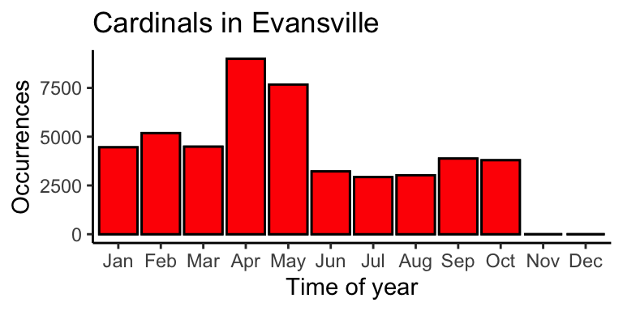
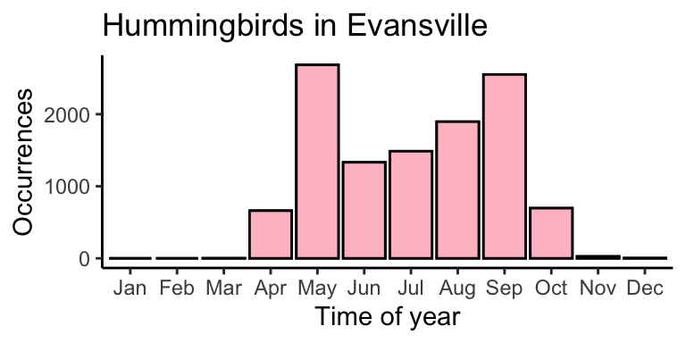
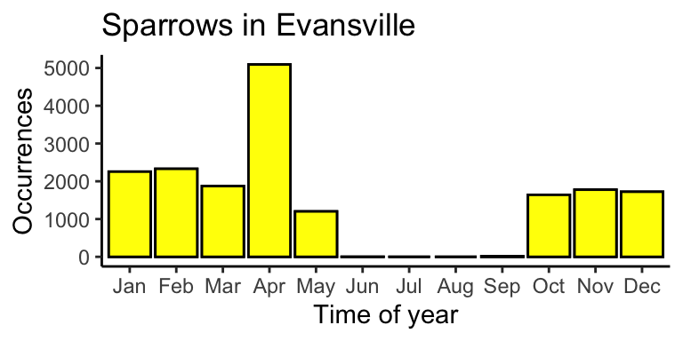
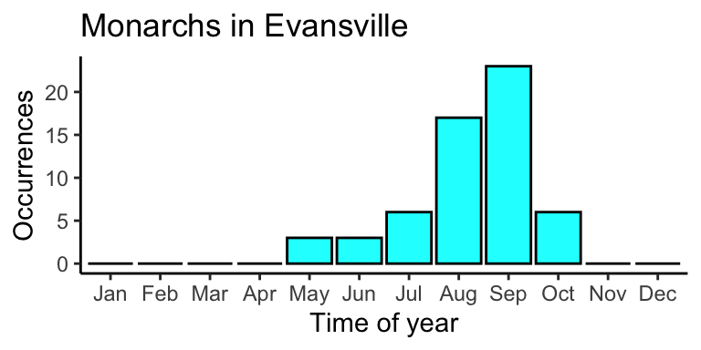
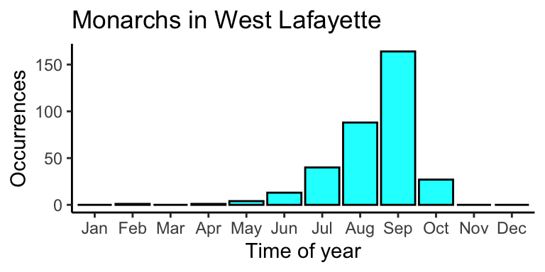
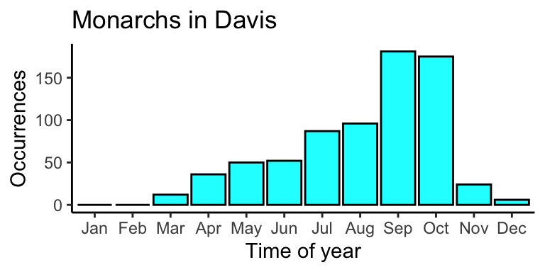
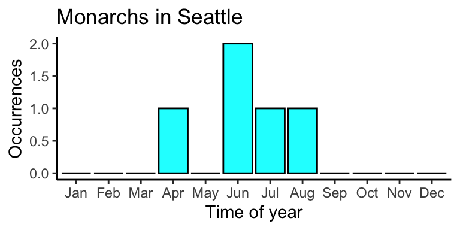
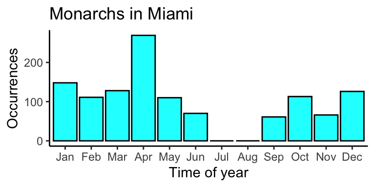
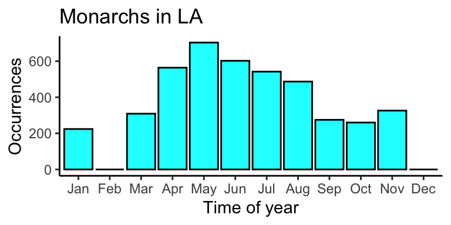

We won’t replicate this (you can follow the link if you would like to do that), but we can use the same data source.
The Global Biodiversity Information Facility (GBIF) is a free an open access database with a lot of information that can be mined about all different species of organisms.
# Get monarch taxonKeymonarch <-name_backbone("Danaus plexippus")$usageKey# remember to set up your GBIF credentials to use occ_download()# test <- rgbif::occ_download(pred("taxonKey", monarch),format = "SIMPLE_CSV")# Evansville and surrounding areawkt <-"POLYGON((-88.54 38.54, -88.54 37.80, -86.74 37.80, -86.74 38.54, -88.54 38.54))"EV_monarchs <-occ_count(facet=c("month"), taxonKey=monarch, geometry=wkt)library(tidyverse)# Make month columns into integersEV_monarchs$month <-as.numeric(EV_monarchs$month)# Fill in missing months with 0 valuesfor (i in1:12) {if (!(i %in% EV_monarchs$month)) { EV_monarchs <-add_row(EV_monarchs, month = i, count =0) }}# Order rows by monthEV_monarchs <-arrange(EV_monarchs, month)# Make column with text month namesEV_monarchs <-mutate(EV_monarchs, Month = month.abb[month])# Make Month column factorsEV_monarchs$Month <-factor(EV_monarchs$Month, levels = EV_monarchs$Month)# Plot the data as a barplot with occurrences for each monthlibrary(ggplot2)ggplot(EV_monarchs, aes(x = Month, y = count)) +# , fill = countgeom_bar(stat="identity", color="black", fill ="cyan") +xlab("Time of year") +ylab("Occurrences") +ggtitle("Monarchs in Evansville") +# scale_fill_gradient(low="cyan", high="cyan") +theme_bw() +theme(panel.border =element_blank(), panel.grid.major =element_blank(),panel.grid.minor =element_blank(), axis.line =element_line(colour ="black"))
Next, convert this script into a function
Determine what the parameters will be (variables that you will change)
It would be nice to see the same graphs for monarch butterflies from other locations
It would be nice to see the same graphs for different species
Change names are are specific like “EV_monarchs” to something not specific to the location (EV) or species (monarchs) so that the code reads well regardless of what these 2 variables are set to.
For functions, I generally change library() to require()
The only difference is that require won’t re-load a package if it is already loaded
This is optional, since library() will still work
Remove duplicates so you only load each library once (unless necessary to reload in a different order)
For functions like filter() which exist in multiple packages, always call with :: specifying the package
Always use dplyr::filter() never filter()
Improve your comments here as you go to specify what each step is (what each line is doing)
If your output is a plot, instead of just plotting, return the plot object at the end
If you just let it return, it will plot, but you can also save the output to a variable and modify settings later. (In this case, we will do this to change the bar colors for each duplicate plot.)
plot_sightings <-function(species ="Danaus plexippus", location = wkt, title ="Monarchs in Evansville") {require(rgbif)require(tidyverse)# Get species taxonKey spec_id <-name_backbone(species)$usageKey# Get data from rgbif for the passed species at the passed location sightings <-occ_count(facet=c("month"), taxonKey=spec_id, geometry=location)library(tidyverse)# Make month columns into integers sightings$month <-as.numeric(sightings$month)# Fill in missing months with 0 valuesfor (i in1:12) {if (!(i %in% sightings$month)) { sightings <-add_row(sightings, month = i, count =0) } }# Order rows by month sightings <-arrange(sightings, month)# Make column with text month names sightings <-mutate(sightings, Month = month.abb[month])# Make Month column factors sightings$Month <-factor(sightings$Month, levels = sightings$Month)# Plot the data as a barplot with occurrences for each month plt <-ggplot(sightings, aes(x = Month, y = count)) +# , fill = countgeom_bar(stat="identity", color="black", fill ="cyan") +xlab("Time of year") +ylab("Occurrences") +ggtitle(title) +theme_bw() +theme(panel.border =element_blank(), panel.grid.major =element_blank(),panel.grid.minor =element_blank(), axis.line =element_line(colour ="black")) return(plt)}
Now to run it we can do:
Note that output plot size is set here for Quarto with {r fig.width=4, fig.height=2} for the code block
We will have to set this in our Shiny app in a different way later
# Northern Cardinal (Cardinalis cardinalis)plot_sightings(species ="Cardinalis cardinalis", location = wkt, "Cardinals in Evansville") +geom_bar(stat="identity", color="black", fill ="red")

# Ruby Throated Hummingbird (Archilochus colubris)plot_sightings(species ="Archilochus colubris", location = wkt, "Hummingbirds in Evansville") +geom_bar(stat="identity", color="black", fill ="pink")

# White-Throated Sparrow (Zonotrichia albicollis)plot_sightings(species ="Zonotrichia albicollis", location = wkt, "Sparrows in Evansville") +geom_bar(stat="identity", color="black", fill ="yellow")

Helper functions
Sometimes a variable is not simply a single word, number, or boolean. In this case, you may need to define additional functions to create the variable given a simpler input
These are the four corners of a rectangle as Latitude and Longitude in counterclockwise direction around the rectangle (the direction is important, clockwise will exclude the area inside)
I defined this manually using the tool here and Apple/Google Maps
To simplify this, it would be nice to have a function that takes either a single Latitude and Longitude or a city name and generates the wkt output.
library(tidygeocoder)# Create table of possible cities to checklocs <- tibble::tribble(~name, ~address,"Evansville", "Evansville, IN","West Lafayette", "West Lafayette, IN 47907", "Davis", "Davis, CA","Seattle", "Seattle, WA","New Jersey", "New Jersey, NY","Miami", "Miami, FL","LA", "Los Angelos, CA")# Get latitude and longitudelocs <-geocode(locs, address, method ="osm", lat = latitude, long = longitude)
Passing 7 addresses to the Nominatim single address geocoder
Query completed in: 7.1 seconds
# Create function to generate string with 4 corners for POLYGON callgenerate_polygon <-function(lat, long, d_lg=0.9, d_lt=0.37) {# "POLYGON((-88.54 38.54, -88.54 37.80, -86.74 37.80, -86.74 38.54, -88.54 38.54))" p =paste0("POLYGON((", long-d_lg, " ", lat+d_lt, ", ", long-d_lg," ", lat-d_lt, ", ", long+d_lg," ", lat-d_lt, ", ", long+d_lg," ", lat+d_lt, ", ", long-d_lg, " ", lat+d_lt,"))")return(p)}# Test function with anu locationanu <-generate_polygon(locs$latitude[1], locs$longitude[1])# Monarch butterfly (Danaus plexippus) at anuplot_sightings(species ="Danaus plexippus", location = anu)
# Populate a column in the data frame with the POLYGON call for each locationlocs2 <-mutate(locs, polygon =generate_polygon(locs$latitude, locs$longitude))## THIS DOESN'T WORK BECAUSE PASTE IS NOT VECTORIZED# Create function to generate string with 4 corners for POLYGON callgenerate_polygon <-function(lat, long, d_lg=0.9, d_lt=0.37) {# Paste is not vectorize, use sprintf instead (limit decimals to 4 places) p =sprintf("POLYGON((%.4f %.4f, %.4f %.4f, %.4f %.4f, %.4f %.4f, %.4f %.4f))", long-d_lg, lat+d_lt, long-d_lg, lat-d_lt, long+d_lg, lat-d_lt, long+d_lg, lat+d_lt, long-d_lg, lat+d_lt )return(p)}# Populate a column in the data frame with the POLYGON call for each locationlocs <-mutate(locs, polygon =generate_polygon(locs$latitude, locs$longitude))## THIS WORKS NOW# Plot all locationsfor (i in1:nrow(locs)) { plt <-plot_sightings(species ="Danaus plexippus", location = locs$polygon[i], paste0("Monarchs in ", locs$name[i]))print(plt)}






Use manipulate() in RStudio for quick and simple interactive plotting
The manipulate package only works in RStudio, but it gives you a very quick and simple way to get drop downs and other selectors like you would do in a Shiny app without a lot of coding.
You can use these sorts of controls:
Sliders
Dropdown pickers
Checkboxes
And combinations of the above
# Very simple example to make sure manipulate is workinglibrary(manipulate)manipulate(plot(1:X), X =slider(1, 10))
A Shiny app gives you more control over the look and feel, more options as far as the ways to interact or display your data, and can run in a web browser locally or across the internet without requiring the viewer to have R or your code running on their system.
################################################################################ Sven Nelson ## 6/24/2024 ## Shiny app for plotting species occurrence from GBIF. #################################################################################### Imports ####require(shiny)require(tidygeocoder)require(memoise)source("../R/plot_sightings.R")source("../R/add_polygon_col.R")#### Setup ##### Set up a dataframe to use connecting names with speciesspecs <- tibble::tribble(~name, ~species, ~short_name, ~clr,"Monarch Butterfly", "Danaus plexippus", "Monarch", "cyan","Northern Cardinal", "Cardinalis cardinalis", "Cardinal", "red","Ruby Throated Hummingbird", "Archilochus colubris", "Hummingbird", "pink","White-Throated Sparrow", "Zonotrichia albicollis", "Sparrow", "yellow")# Create the table of possible cities to checklocs <- tibble::tribble(~name, ~address,"Evansville", "Evansville, IN","West Lafayette", "West Lafayette, IN 47907", "Davis", "Davis, CA","Seattle", "Seattle, WA","New Jersey", "New Jersey, NY","Miami", "Miami, FL","LA", "Los Angelos, CA")# Variable to keep track of whether data needs to be reloadedreload_data <-TRUEif (file.exists("locs.rds")) { locs2 <-readRDS("locs.rds")if (dplyr::all_equal(locs, locs2[,1:2]) &ncol(locs2) ==5) { locs <- locs2 reload_data <-FALSE }} if (reload_data) {# Get latitude and longitude locs <-geocode(locs, address, method ="osm", lat = latitude, long = longitude)# Populate a column in the data frame with the POLYGON call for each location locs <-add_polygon_col(locs)saveRDS(locs, file ="locs.rds")}#### User Interface ##### Define UI for application that draws a histogramui <-fluidPage(# Application titletitlePanel("Organism migration tracking"),# Sidebar with a slider input for number of bins sidebarLayout(sidebarPanel(selectInput("spec_pick", "Organism", choices = specs$name),selectInput("loc_pick", "Location", choices = locs$name) ),# Show a plot of the generated distributionmainPanel(plotOutput("sightingsPlot", width =400, height =200) # Set size here ) ))#### Server function ##### Define server logic required to draw a histogramserver <-function(input, output) { output$sightingsPlot <-renderPlot({# generate bins based on input$bins from ui.R sp_nm <- input$spec_pick lc_nm <- input$loc_pick sp <- specs[specs$name == sp_nm,]$species sp_col <- specs[specs$name == sp_nm,]$clr lc <- locs[locs$name == lc_nm,]$polygonplot_sightings(species = sp, location = lc, paste0(sp_nm, " in ", lc_nm)) +geom_bar(stat="identity", color="black", fill = sp_col) })}#### Run app ####shinyApp(ui = ui, server = server)
We will end up with a .R file with the module code, which we can run in a app.R shiny app.
The file sightingsModule.R below:
################################################################################ Sven Nelson ## 6/24/2024 ## Shiny app module for plotting species occurrence from GBIF. #################################################################################### User Interface ##### Define UI for application that draws a histogramsightingsInput <-function(id, label ="Sightings", specs, locs, sel) { ns <-NS(id)tagList(h4(label),selectInput(ns("spec_pick"), "Organism", choices = specs$name, selected = sel),selectInput(ns("loc_pick"), "Location", choices = locs$name) )}sightingsOutput <-function(id, label ="Sightings") { ns <-NS(id)tagList(plotOutput(ns("sightingsPlot"), width =400, height =200) )}#### Server function ##### Define server logic required to draw a histogramsightingsServer <-function(id, specs, locs) {moduleServer( id,function(input, output, session) { output$sightingsPlot <-renderPlot({# generate bins based on input$bins from ui.R sp_nm <- input$spec_pick lc_nm <- input$loc_pick sp <- specs[specs$name == sp_nm,]$species sp_col <- specs[specs$name == sp_nm,]$clr lc <- locs[locs$name == lc_nm,]$polygonplot_sightings(species = sp, location = lc, paste0(sp_nm, " in ", lc_nm)) +geom_bar(stat="identity", color="black", fill = sp_col) }) } )}
Use multiple modules in one shiny app
The file app.R with the shiny app using multiple instances of the same module.
################################################################################ Sven Nelson ## 6/24/2024 ## Shiny app for plotting species occurrence from GBIF. #################################################################################### Imports ####require(shiny)require(tidygeocoder)source("../R/plot_sightings.R")source("../R/add_polygon_col.R")source("../R/sightingsModule.R")#### Setup ##### Set up a dataframe to use connecting names with speciesspecs <- tibble::tribble(~name, ~species, ~short_name, ~clr,"Monarch Butterfly", "Danaus plexippus", "Monarch", "cyan","Northern Cardinal", "Cardinalis cardinalis", "Cardinal", "red","Ruby Throated Hummingbird", "Archilochus colubris", "Hummingbird", "pink","White-Throated Sparrow", "Zonotrichia albicollis", "Sparrow", "yellow")# Create the table of possible cities to checklocs <- tibble::tribble(~name, ~address,"Evansville", "Evansville, IN","West Lafayette", "West Lafayette, IN 47907", "Davis", "Davis, CA","Seattle", "Seattle, WA","New Jersey", "New Jersey, NY","Miami", "Miami, FL","LA", "Los Angelos, CA")# Variable to keep track of whether data needs to be reloadedreload_data <-TRUEif (file.exists("locs.rds")) { locs2 <-readRDS("locs.rds")if (dplyr::all_equal(locs, locs2[,1:2]) &ncol(locs2) ==5) { locs <- locs2 reload_data <-FALSE }} if (reload_data) {# Get latitude and longitude locs <-geocode(locs, address, method ="osm", lat = latitude, long = longitude)# Populate a column in the data frame with the POLYGON call for each location locs <-add_polygon_col(locs)saveRDS(locs, file ="locs.rds")}#### User Interface ##### Define UI for application that draws a histogramui <-fluidPage(# Application titletitlePanel("Organism migration tracking"),# Sidebar with a slider input for number of bins sidebarLayout(sidebarPanel(sightingsInput("plot1", "Plot 1", specs, locs, sel ="Monarch Butterfly"),sightingsInput("plot2", "Plot 2", specs, locs, sel ="Northern Cardinal"),sightingsInput("plot3", "Plot 3", specs, locs, sel ="Ruby Throated Hummingbird"),sightingsInput("plot4", "Plot 4", specs, locs, sel ="White-Throated Sparrow") ),# Show a plot of the generated distributionmainPanel(sightingsOutput("plot1", "Plot 1"),sightingsOutput("plot2", "Plot 2"),sightingsOutput("plot3", "Plot 3"),sightingsOutput("plot4", "Plot 4") ) ))#### Server function ##### Define server logic required to draw a histogramserver <-function(input, output) {sightingsServer("plot1", specs, locs)sightingsServer("plot2", specs, locs)sightingsServer("plot3", specs, locs)sightingsServer("plot4", specs, locs)}#### Run app ####shinyApp(ui = ui, server = server)
More Shiny things to try on your own
Install bslib package and test out additional formatting options including card() for nice cards